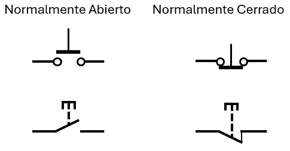
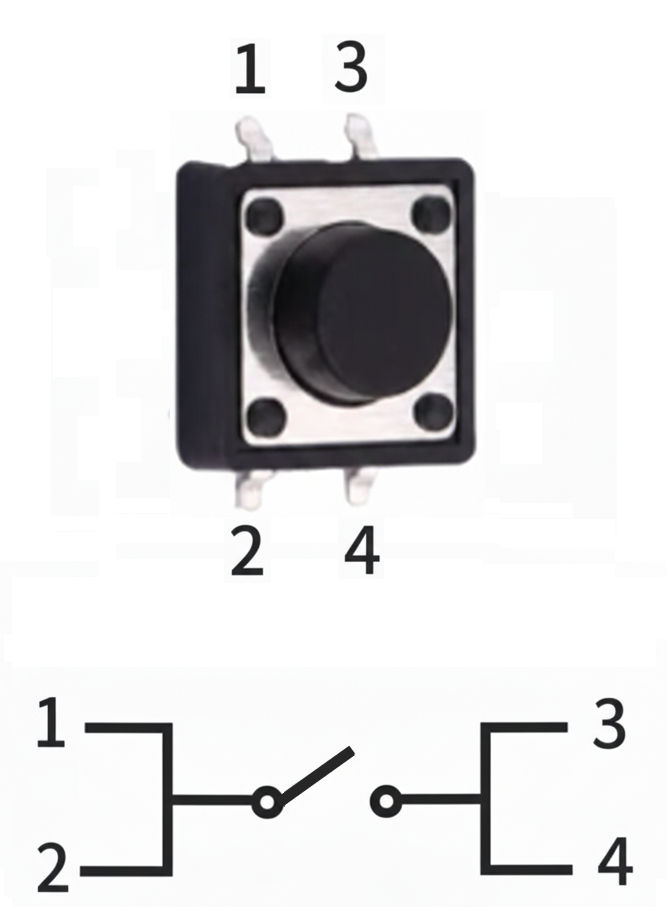
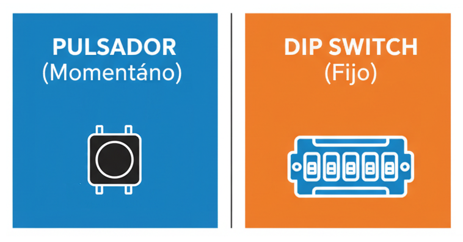

🟣 El mapa del interruptor
🌍 Dos estilos para dibujar el mismo componente
Así como el idioma español tiene distintas variantes regionales, la electrónica también tiene dos grandes estilos para dibujar sus componentes en los esquemáticos. Los dos se usan en el mundo, y conviene reconocerlos:
- Estilo europeo (norma IEC): usa formas geométricas simples (rectángulos, círculos). Es el estándar internacional más extendido, y el que se usa en software de diseño profesional como KiCad o Altium.
- Estilo americano (norma ANSI): usa trazos más detallados, con resortes y líneas curvas. Se usa principalmente en Estados Unidos y en algunos manuales antiguos.

💡 ¿Cuál usar? Como los dos estilos son válidos, conviene conocer ambos. Pero en este curso usaremos preferentemente el estilo europeo (IEC), porque es el estándar internacional y el que se encuentra en la mayoría de planos y manuales modernos.
🔘 SPST y SPDT: dos tipos de interruptores
Los interruptores se clasifican según cuántos contactos tienen y cuántos caminos pueden ofrecer. Los dos tipos más básicos son SPST y SPDT:
SPST — Single Pole, Single Throw
Un polo, un tiro. Es el interruptor más simple: tiene dos terminales y solo dos estados posibles. Se abre o se cierra. Es como el interruptor de la luz de un cuarto.
SPDT — Single Pole, Double Throw
Un polo, doble tiro. Tiene tres terminales. El terminal central se conecta con uno de los dos laterales, pero nunca con ambos al mismo tiempo. Es como un cambio de vías de tren: puedes elegir entre dos caminos.
💡 Aplicación del SPDT: el circuito de escalera que viste en la mirada comparativa usa dos SPDT. Cada uno elige entre dos "viajeros", y al accionar cualquiera de los dos, el estado de la luz se invierte.
🔌 Los contactos: NO, NC y común
Cuando miras un interruptor por dentro, no ves cables: ves contactos. Un contacto es cada uno de los puntos metálicos que se unen o se separan cuando accionas el interruptor.
Hay tres tipos de contactos:
- Contacto común: el punto que siempre está conectado, independientemente de la posición del interruptor. Es el punto de referencia.
- Contacto normalmente abierto (NO): en reposo no está conectado al común. Solo se conecta cuando accionas el interruptor.
- Contacto normalmente cerrado (NC): en reposo sí está conectado al común. Se desconecta cuando accionas el interruptor.
💡 Regla mental: "normalmente" se refiere al estado de reposo, es decir, cuando nadie está accionando el interruptor. Es el estado natural del componente.
🔍 El secreto de las 4 patas del pulsador
Los pulsadores que usarás en tu kit tienen cuatro patas. Pero no te dejes engañar: internamente solo hay dos cables conectados. Las otras dos patas están unidas internamente a las primeras.

🧠 ¿Cómo funciona por dentro?
- Las patas del lado izquierdo (1 y 2) están unidas internamente por un pequeño puente metálico.
- Las patas del lado derecho (3 y 4) también están unidas entre sí.
- Al presionar el botón, un contacto interno conecta el lado izquierdo con el derecho, cerrando el circuito.
- Al soltar, el contacto se separa y el circuito se abre.
⚠️ Error clásico: si conectas tus cables a las patas 1 y 2 (que están en el mismo lado), el circuito estará siempre cerrado (el LED siempre encendido), ¡incluso sin presionar el botón! Porque las dos patas ya están unidas por dentro.
✅ Regla de oro: conecta siempre en diagonal. Por ejemplo: una pata del lado superior izquierdo (1) y una pata del lado inferior derecho (4). Así te aseguras de que el circuito solo se cierre al presionar el botón.
🔀 Pulsador vs. DIP switch
Los pulsadores son momentáneos: solo funcionan mientras los presionas. Los DIP switches son fijos: mantienen su posición hasta que los cambias. Cada uno tiene su uso.

⚡ Un detalle invisible: el rebote mecánico
Cuando presionas un interruptor mecánico, no se cierra de una sola vez. Durante unos milisegundos, el contacto rebota: hace y deshace contacto varias veces antes de quedarse cerrado. Es como cuando dejas caer una pelota al piso: no se detiene de inmediato, rebota varias veces antes de quedarse quieta.
A simple vista no lo notas, porque los rebotes duran milisegundos. Pero para un chip que lee la señal millones de veces por segundo, esos rebotes se ven como múltiples pulsaciones, cuando en realidad fue solo una.
💡 ¿Cómo se soluciona? Con un condensador que absorbe los rebotes, o con un pequeño programa (software) que espera unos milisegundos antes de leer la señal. Este concepto se llama antirrebote (o "debounce" en inglés).
El rebote es un ejemplo de cómo el mundo físico no es perfecto: los componentes reales tienen pequeñas imperfecciones que el ingeniero debe anticipar y resolver. Es un recordatorio de que los circuitos no viven solo en el papel.
🔬 Taller: Conexión correcta del pulsador
Vas a montar un circuito con un pulsador de 4 patas y verificar que solo funciona cuando lo presionas, conectando las patas en la posición correcta.
💡 Dos formas de hacer este taller: puedes hacerlo en el aula (con el kit del colegio) o llevarlo a casa si tienes acceso a los materiales. Tu docente te dirá cuál elegir.
🧰 Materiales
- Un LED rojo.
- Una resistencia de 330 Ω.
- Una batería de 9 V o una fuente de 5 V.
- Un pulsador de 4 patas.
- Cables caimán.
- Una protoboard.
- Tu cuaderno de bitácora.
🛠️ Procedimiento
- Identifica las 4 patas del pulsador. Míralo de frente y numera las patas del 1 al 4 (o mira el diagrama de la Fig. 3).
- Monta el circuito con la conexión correcta: pila → resistencia → LED → pata 1 y pata 4 (diagonal) → pila. Recuerda: las patas 1 y 2 están unidas por dentro, y 3 y 4 también. Debes conectar una pata del lado izquierdo con una del lado derecho.
- Observa. ¿El LED está apagado cuando no presionas? ¿Enciende cuando presionas? ¿Se apaga cuando sueltas?
- Ahora prueba la conexión incorrecta. Cambia los cables a las patas 1 y 2 (mismo lado). ¿Qué pasa con el LED?
-
Registra en tu bitácora:
Conexión Sin presionar Presionado ¿Funciona bien? Patas 1 y 4 (diagonal) ☐ Sí / ☐ No Patas 1 y 2 (mismo lado) ☐ Sí / ☐ No
📝 Mi nota sobre el taller
Cuando termines, escribe una nota breve al final de tu hoja de registro. No es una tarea, es una reflexión. Puedes escribir sobre:
- ¿Con quién hiciste el taller?
- ¿Qué diferencia encontraste entre conectar en diagonal y conectar en el mismo lado?
- ¿Por qué crees que el pulsador tiene 4 patas, si solo se necesitan 2?
- ¿Cómo se relaciona esto con la estructura interna del componente?
❓ Pregunta guía
Si tuvieras que explicarle a un compañero por qué hay que conectar el pulsador en diagonal, ¿cómo se lo explicarías sin mostrarle el diagrama?
⚠️ Seguridad: trabaja siempre con 3 V, 5 V o 9 V. Nunca uses voltajes de pared (110 V o 220 V). Siempre usa resistencias de protección con los LEDs.
📜 Los que pusieron orden a los símbolos
A finales del siglo XIX, cada país tenía su propia forma de dibujar los componentes eléctricos. Un ingeniero que viajaba de Francia a Inglaterra tenía que reaprender todo el vocabulario visual. Era un caos.
En 1906, se fundó en Londres la Comisión Electrotécnica Internacional (IEC), con el objetivo de unificar todos los estándares eléctricos y electrónicos del mundo. Era una tarea enorme: había que ponerse de acuerdo sobre qué símbolo representaría cada componente, qué unidades se usarían, cómo se medirían las magnitudes.
Uno de los primeros temas que abordó la IEC fue la simbología de los interruptores. Se propusieron varias alternativas, y finalmente se adoptó el estilo de rectángulos y líneas simples que hoy llamamos "europeo".
Estados Unidos, por su parte, mantuvo su propio estilo (el "americano", con resortes y trazos más detallados), administrado por el Instituto Nacional Estadounidense de Estándares (ANSI). Durante décadas, ambos estilos convivieron.
🌍 La unificación gradual
En 2019, ANSI adoptó voluntariamente el símbolo de la resistencia europea (el rectángulo), dejando atrás el zigzag. Fue un paso histórico hacia la unificación global. Hoy la IEC sigue siendo el organismo de referencia para la simbología electrónica, y sus normas son las que aparecen en la mayoría de software profesionales.
La lección: la normalización es un proceso lento pero necesario. Unificar los símbolos parece un detalle, pero es lo que permite que un ingeniero en Colombia pueda leer un plano diseñado en Alemania sin tener que aprender un nuevo lenguaje.
Fuentes: archivos históricos de la Comisión Electrotécnica Internacional (IEC) y del American National Standards Institute (ANSI).🗺️ Repaso visual

El mapa del interruptor
Dale play y en 6 minutos descubrirás:
- 🌍 Dos estilos: por qué existen el europeo (IEC) y el americano (ANSI).
- 🔘 SPST y SPDT: los dos tipos básicos de interruptor.
- 🔌 Los contactos: común, NO y NC.
- 🔍 El secreto de las 4 patas: por qué hay que conectar en diagonal.
- ⚡ El rebote mecánico: la imperfección invisible que los ingenieros deben resolver.
💡 Ten tu protoboard a mano: hay conexiones que querrás probar.